<nav class="navbar is-info has-shadow" role="navigation" aria-label="main navigation">
  <div class="navbar-brand">
    <a class="navbar-item" href="#">
      
    </a>

    <a role="button" class="navbar-burger burger" aria-label="menu" aria-expanded="false" data-target="navbarMenu">
      <span aria-hidden="true"></span>
      <span aria-hidden="true"></span>
      <span aria-hidden="true"></span>
    </a>
  </div>

  <div id="navbarMenu" class="navbar-menu">
    <div class="navbar-start">
      <a class="navbar-item" href="#">
        Resep JSR
      </a>
      <a class="navbar-item" href="#">
        Tentang Web
      </a>
    </div>
  </div>
</nav>
<router-outlet></router-outlet>
